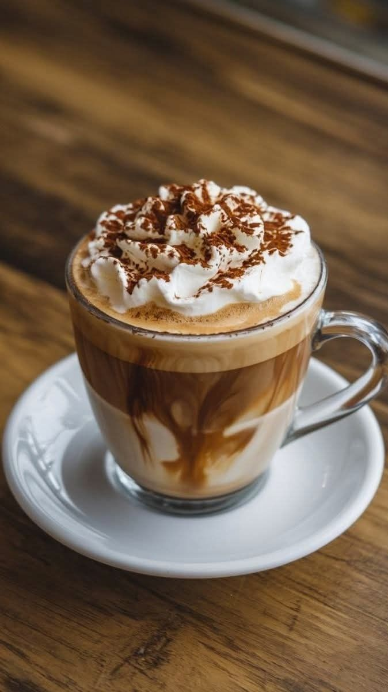
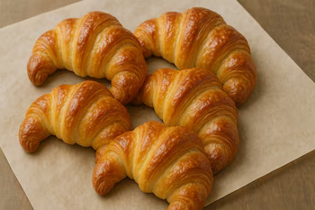

Menú
Capuccino
Café espresso con crema, coronado con un toque de cacao. Cremoso y aromático, ideal para cualquier momento del día.
Cookies

Galletas caseras. Crocantes por fuera y suaves por dentro, perfectas para acompañar tu café.
Tostado de Jamón y Queso

Clásico tostado con jamón y queso derretido en pan artesanal. Una opción sabrosa para el desayuno o la merienda.
Latte

Café suave con abundante leche vaporizada y una capa ligera de espuma. Ideal para quienes prefieren un sabor más cremoso y delicado.
Brownie casero

Suave por dentro y crocante por fuera, con intenso sabor a chocolate. Ideal para los amantes de lo dulce.
Medialunas
Deliciosas medialunas, perfectas para acompañar el café de la mañana o la merienda.